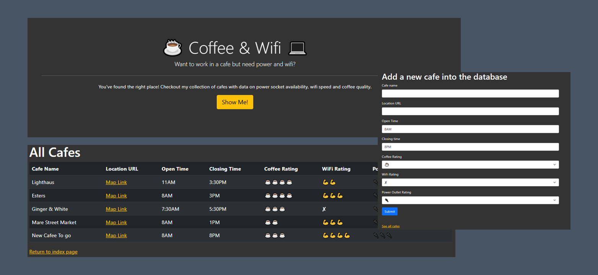

Coffee Web
Café Explorer simplifies the search for your next favorite café. Submit café details, including name, location URL, opening/closing times, and ratings for coffee, WiFi, and power outlets. Explore contributed cafés on the platform, complete with essential details. Join Café Explorer today to find your caffeine haven effortlessly!